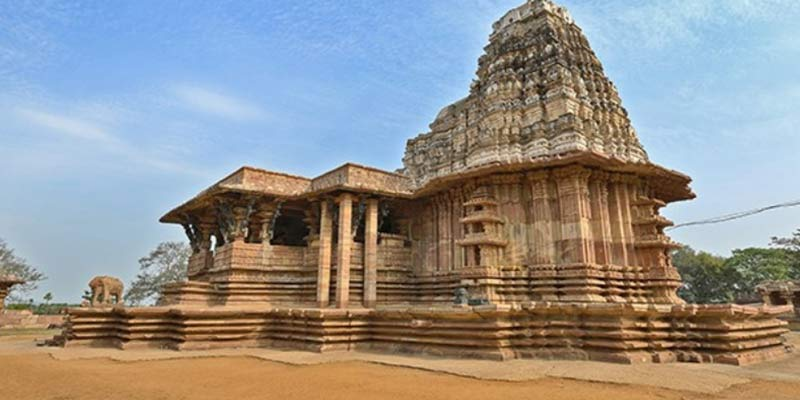
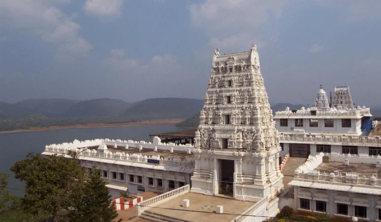
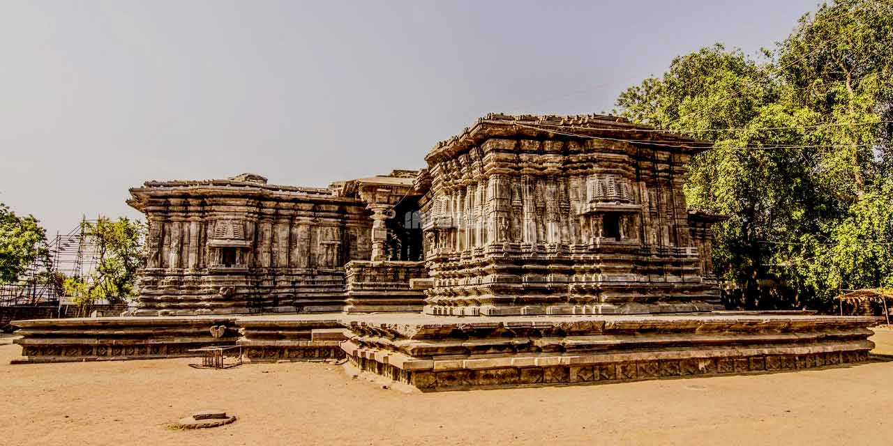
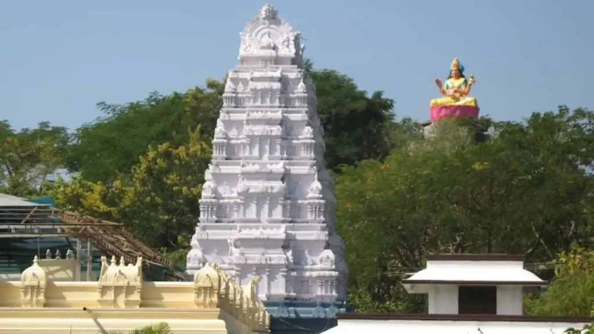

Temples and piligrimages in Telangana
Yadadri Lakshmi Narasimha Swamy Temple
Yadadri Temple is one of the most famous temples in Telangana, dedicated to Lord Narasimha and located on a hilltop.
- Religious Significance: Dedicated to Lord Narasimha.
- Location: Yadagirigutta, Telangana.
- Special Feature: Hilltop temple.
- Click here for official information.
Ramappa Temple (UNESCO Site)

Ramappa Temple is a UNESCO World Heritage Site known for its Kakatiya architecture and unique floating bricks.
- Historical Importance: UNESCO World Heritage Site.
- Architecture: Kakatiya style.
- Location: Warangal, Telangana.
- Click here for details.
Bhadrachalam Temple

Bhadrachalam Temple is a famous temple dedicated to Lord Rama, located on the banks of the Godavari River.
- Religious Importance: Dedicated to Lord Rama.
- Festival: Sri Rama Navami.
- Location: Bhadradri Kothagudem district.
- Click here for more information.
Thousand Pillar Temple

The Thousand Pillar Temple is an ancient temple built by the Kakatiya dynasty, known for its intricate carvings and architecture.
- Historical Significance: Built in the 12th century.
- Deities: Shiva, Vishnu, Surya.
- Location: Warangal, Telangana.
- Click here for details.
Gnana Saraswati Temple, Basar

Basar Saraswati Temple is one of the few temples in India dedicated to Goddess Saraswati and is popular for the Aksharabhyasam ritual.
- Religious Significance: Dedicated to Goddess Saraswati.
- Special Ritual: Aksharabhyasam for children.
- Location: Basar, Telangana.
- Click here for more information.